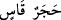
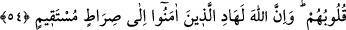

Kalbin hastalıklarından maksad, şüphe ve nifaktır. İnsanın kalıbı ile ilgili hastalık
cismânî helâke sebep olduğu gibi kalbi ile ilgili hastalık da mânevî helâke sebep olur.
“Kalbleri katılaşanlar”dan maksad müşriklerdir. Kasvet kalbin katılığıdır. Kelimenin
aslı “__WORD__ (sert taş)”tandır. “__WORD__ ise onu tedavi etmektir. Kâşifî der ki: “Murad
edilen şudur: Münâfık ve müşrik kimseler şeytanın ilkâsından, şüpheye ve muhâlefete
düşerler.”
“Zâlimler,” yâni münâfık ve müşrikler “gerçekten” haktan “oldukça uzak bir ayrılık”
yâni şiddetli bir düşmanlık ve tam bir muhâlefet “içindedirler.” Ayrılıkla vasfedilen
gerçekten uzaklığa mâruz olduğu hâlde “ayrılık” mübâlağa için “uzak” olmakla
vasfedilmiştir.
Burada zulümlerini tescil etmek üzere münâfık ve müşrikler için zamir kullanılacak
yerde açık isim zikredilmiştir.
54. Bir de, kendilerine ilim verilenler, onun (Kur’an’ın) hakikaten Rabbin
tarafından gelmiş bir gerçek olduğunu bilsinler de ona inansınlar, bu sayede kalpleri
huzur ve tatmine kavuşsun. Şüphesiz ki Allah, îmân edenleri, kesinlikle dosdoğru
bir yola yöneltir.
“Bir de, kendilerine ilim verilenler, onun” yâni Kur’ân’ın, Celâleyn Tefsîri’nde
belirtildiğine göre Kur’an âyetlerinden Allah’ın muhkem kıldıklarının “hakikaten
Rabbin tarafından gelmiş bir gerçek olduğunu” yâni onun Allah katından nâzil olan
hak olduğunu, şeytanın onda tasarruf imkânı olmadığını “bilsinler de ona” Kur’an’a
“inansınlar,” yâni ona îmân üzere sabit olsunlar ya da şeytanın kattıklarını reddedip
îmânları artsın “böylece kalpleri ona saygı duysun.” boyun eğsin ve alçak gönüllü
olsun.
“Binaen aleyh kalbleri ona iyice bağlansın” Kalblerinde hastalık olanların aksine
gönülleri Kur’anla doysun sükûn ve huşûa ersinler. Kâşifî der ki: “Mü’minlerin
gönülleri Kur’an için yumuşar ve onun hükümlerini kabul ederler.”
“Şüphesiz ki Allah, îmân edenleri,” dînî konularda, özellikle ayakların kaydığı
yerlerde ve güçlüklerde -ki yukarıda zikredilen de bu cümledendir- “kesinlikle
dosdoğru bir yola yöneltir.” O da açık hakka ulaştıran sahih düşünce ve anlayıştır.
et-Te’vîlâtü’n-Necmiyye’de der ki: “Allah ihlâslı mümini belâ ve fitnelerle dener.
Ona hak ile bâtılı birbirinden ayıracak güzel bir basîret bahşeder. Bu yüzden şüphe
bulutu onu gölgelemez, gaflet örtüsü ondan açılır. Gün yükseldiğinde sabah sisinin
güneş ışınlarına bir tesiri olmadığı gibi fitne ve belâ dumanı da ona tesir etmez.